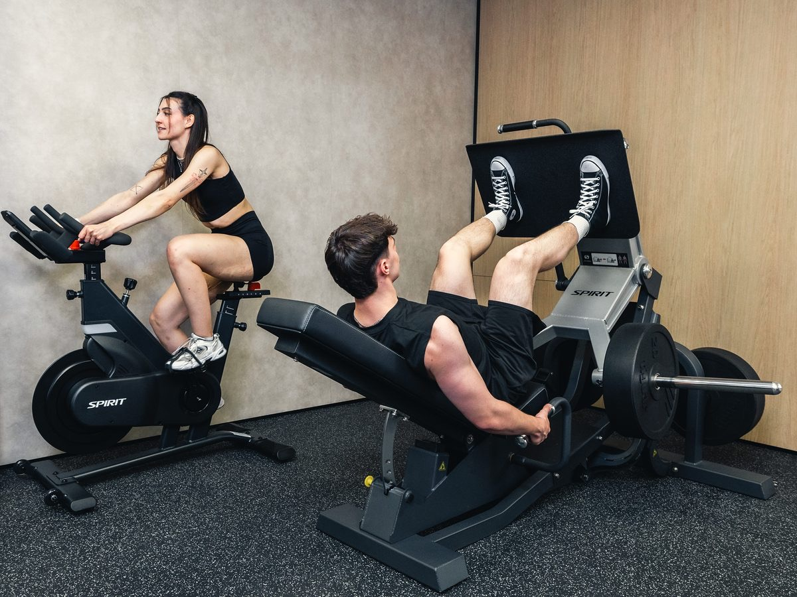
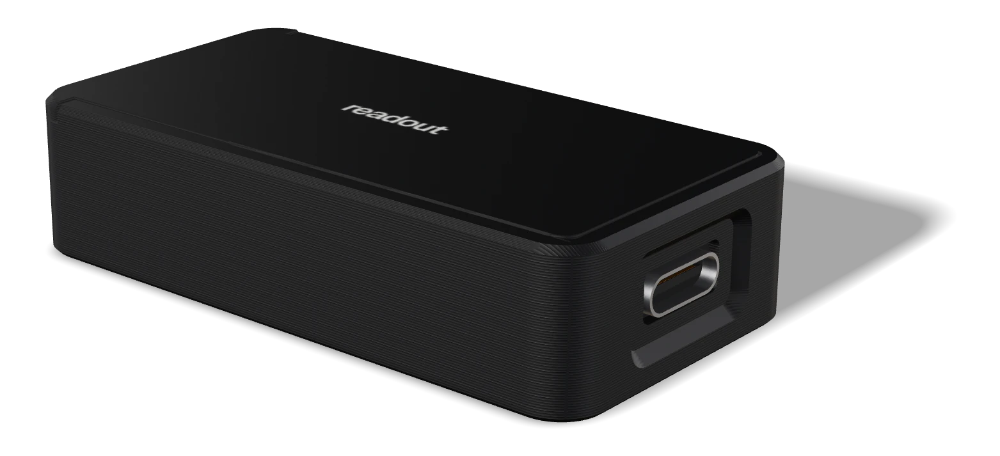
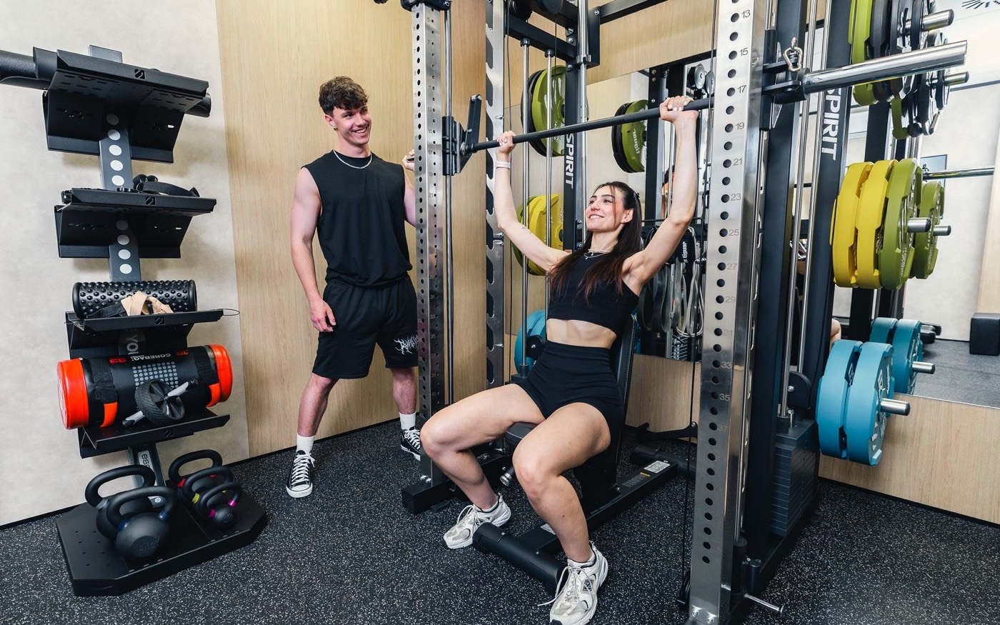
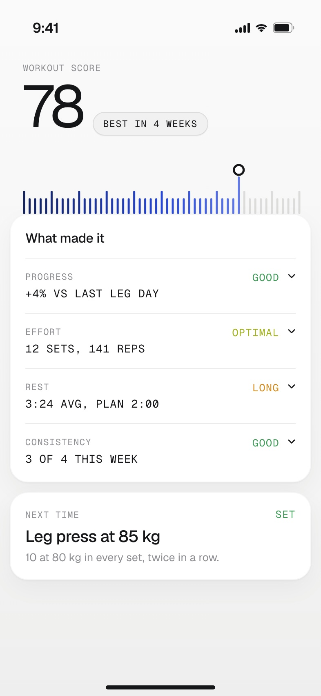
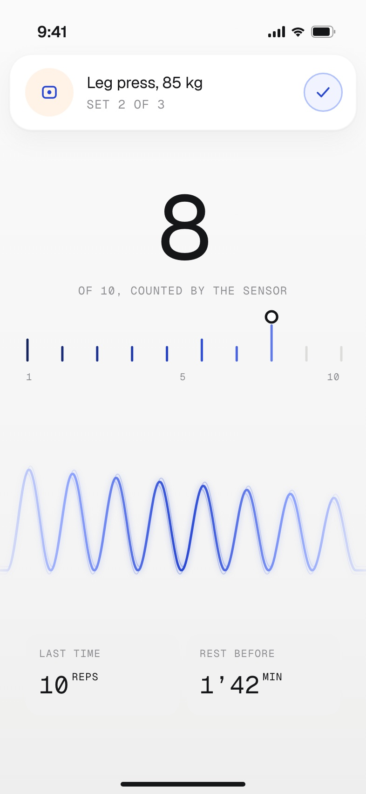

Campaigns
Your training, measured. Explained in words anyone can read.
Nothing here depends on our own followers. Each campaign has a reason for someone else to share it: proof, a number they did not have, their own progress, or their own gym.
The first twelve weeks. Each bar is a campaign; the ones that never stop keep running after week twelve.
The open lab.
Weeks 1 to 4, the launchEvery count, checked by hand, in public. Anyone can bring a set and try to beat the sensor.
What people do
- Open lab days at FitPods: we film each set with the sensor and a person counting.
- The weekly number goes up on a board and online: "2,431 reps counted, 7 off."
- Anyone who beats the sensor gets their set on our wall.
How it travels
People post their own lab set; tech and fitness media in Brno; LinkedIn shares from engineers and owners.
What we make
- A lab corner at FitPods (poster, table, board)
- The weekly accuracy post
- A short film of one lab day
Timeline
How we know it worked
| reps | off | |
|---|---|---|
| Mon | 612 | 2 |
| Wed | 904 | 3 |
| Fri | 915 | 2 |


Your gym floor, measured.
Monthly, for ownersOne real finding a month from the FitPods floor that every owner recognises.
What people do
- A one-page floor report each month: the busiest hour, the most used machine, the four-week cliff for new members.
- Shared on LinkedIn; sent to any owner who asks.
How it travels
Owners and industry people share it on LinkedIn; e-mails get forwarded inside gym chains.
What we make
- The monthly report
- Three LinkedIn carousels
- One clean chart
Timeline
How we know it worked
Your gym floor, measured.
At FitPods, 3 of 13 new members stop in week three. Here is the week they stop, and what the ones who stay do differently.

Go up.
Always onThe app says when to add weight. Members share the moment it tells them to go up.
What people do
- When the app says Go up, it makes a share card: the machine, +5 kg, the sets.
- Members post it; the gym reposts the week's best on Monday.
How it travels
Members' stories and their friends; the gym's account.
What we make
- The share card in the app
- A weekly "Go up of the week" post
Timeline
How we know it worked

Rest that times itself.
Weekly, ThursdaysOne short tip with one chart from real sets: rest, tempo, range.
What people do
- A five-slide carousel: one question, one chart, one answer.
How it travels
Saves and shares to friends who train; creators quote the charts.
What we make
- A carousel a week
Timeline
How we know it worked

The week in numbers.
MondaysThe gym's week, measured, in one clean chart. Each gym gets its own card.
What people do
- Every Monday a card per gym: workouts, the busiest hour, records.
How it travels
Each gym reposts its own card; members share their gym's.
What we make
- A card per gym, made automatically
Timeline
How we know it worked

FitPods, this week888 workouts